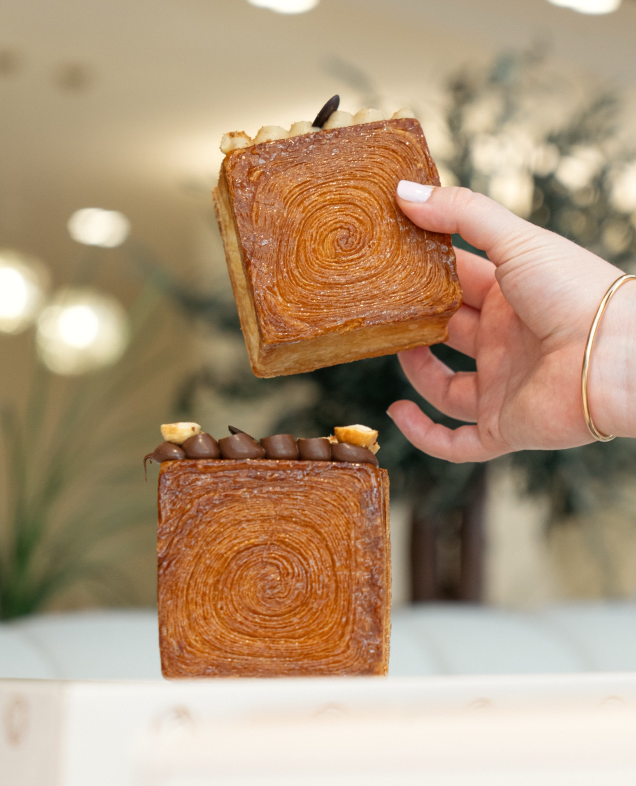
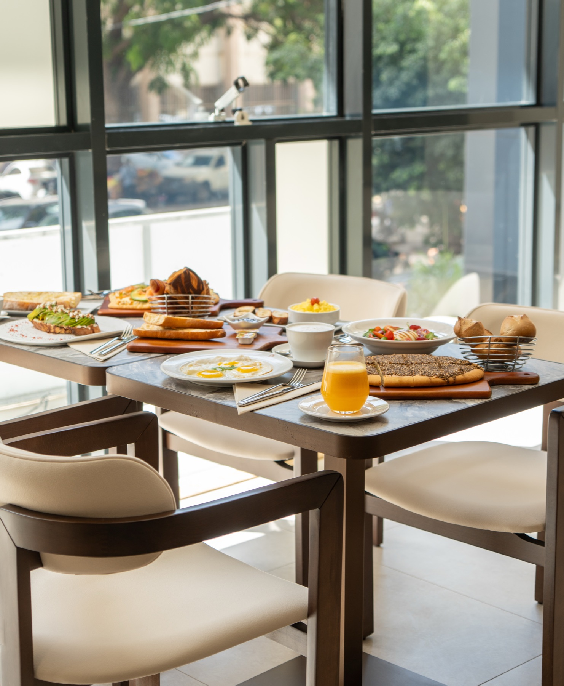
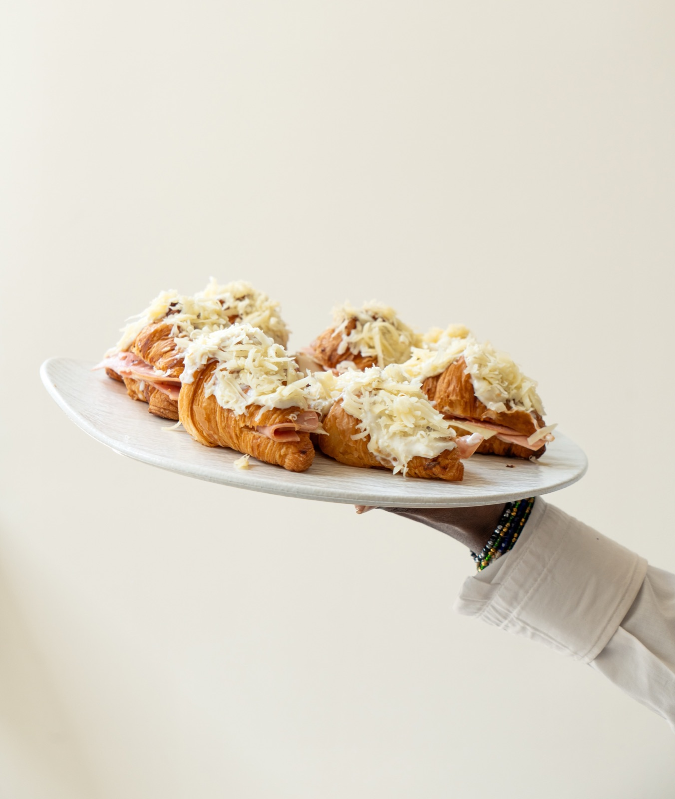
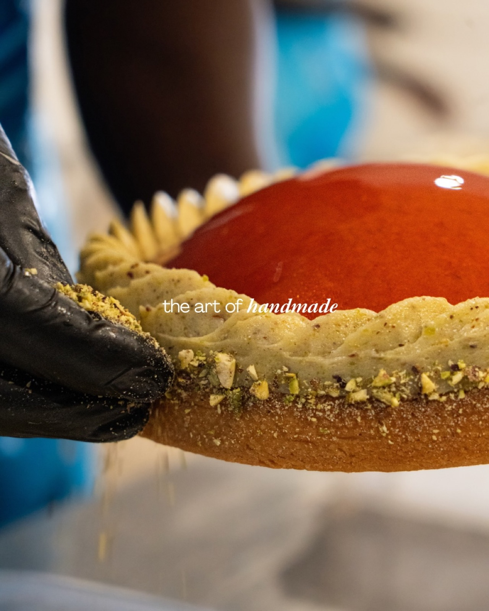
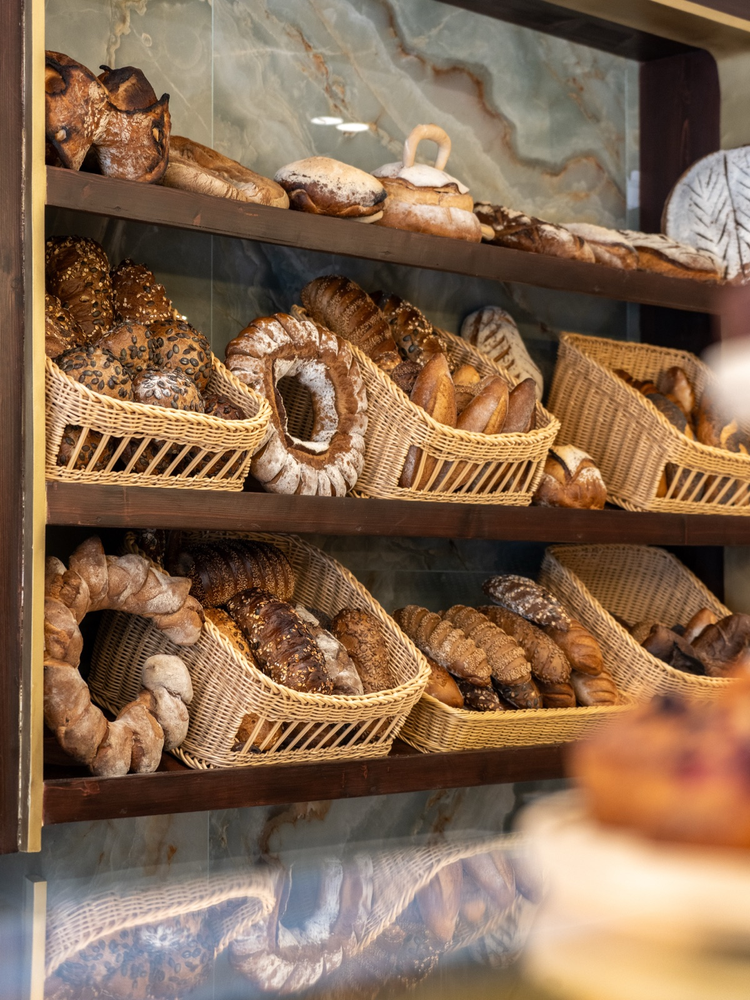
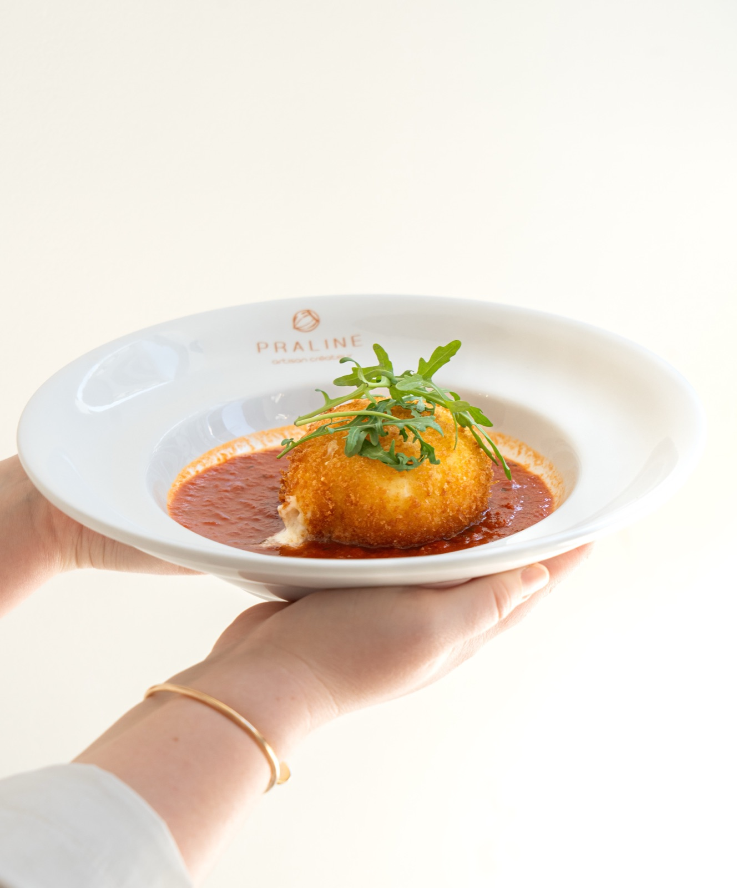
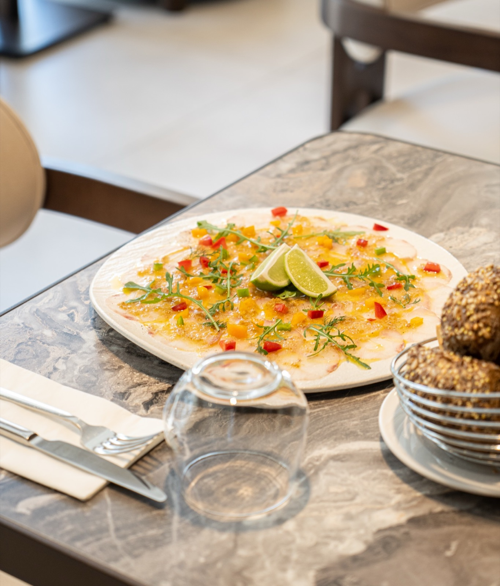

Découvrir ↗01
La pâtisserie
Des créations fines, généreuses et toujours de saison.
Dakar · Sénégal
Boulangerie, pâtisserie et cuisine de partage. Chaque création est préparée sur place, avec soin, précision et beaucoup de gourmandise.

Des matins
plus doux.
Artisan créateur
Chez Praline, rien n’est laissé au hasard. Les gestes sont précis, les détails travaillés et chaque préparation est pensée, réalisée et dressée à la main.
Du pétrin au four, du premier café au goûter : une carte vivante, généreuse et entièrement faite maison.

Découvrir ↗Des créations fines, généreuses et toujours de saison.

Découvrir ↗Brunch, sandwichs et assiettes imaginés pour chaque moment.

Découvrir ↗Mignardises, gâteaux et coffrets pour vos événements.

Du pétrin au four
Farines choisies, fermentations lentes et gestes d’artisan. Nos pains sont façonnés et cuits chaque jour pour une croûte franche, une mie vivante et ce parfum qui donne envie de revenir.
Votre rendez-vous du week-end
Du café qui réveille, du pain encore chaud, des assiettes salées et quelques douceurs à partager. Installez-vous, on s’occupe du reste.


Nous trouver